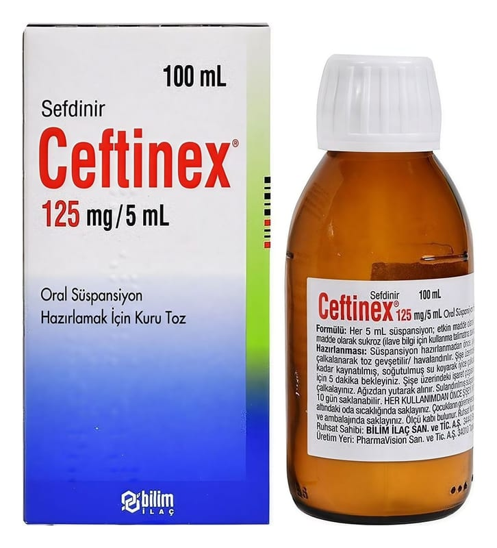

Ceftinex 125 mg/5 ml Oral Süspansiyon Hazırlamak İçin Kuru Toz, 100 ml

Ne için kullanılır
KT · Bölüm 1CEFTİNEX ağız yolu ile kullanılan ve sefalosporin olarak bilinen antibiyotik ilaç grubuna dahil olan sefdinir etkin maddesini içermektedir.
CEFTİNEX, süspansiyon oluşturmak üzere krem-sarı renkli, çilek ve krema aromalı, granüle toz şeklinde 100 mL’lik şişeler halinde bulunmaktadır.
CEFTİNEX bakterilerin (mikropların) neden olduğu aşağıdaki enfeksiyonların (iltihap oluşturan mikrobik hastalık) tedavisinde kullanılır.
Ergen ve yetişkinlerde: • Toplum kökenli akciğer iltihabı (zatürre, pnömoni) • Kronik bronş iltihabının akut alevlenmesi • Yüz kemiklerinin içindeki hava boşluklarının iltihabı (Akut maksiller sinüzit) • Bademcik (tonsillit)/yutak (farenjit) iltihabı • Komplike olmayan cilt ve yumuşak doku enfeksiyonları
Çocuklarda: • Orta kulak iltihabı (akut bakteriyel otitis media) • Bademcik (tonsillit) ve yutak iltihabı (farenjit) • Komplike olmayan cilt ve yumuşak doku enfeksiyonları